生成式學習
Table of Contents

1. 生成式學習
1.1. 生成是一件複雜的事
1.2. 生成式AI的發展與演進
- 早期的文字生成與對話模
1966 年，麻省理工學院的約瑟夫·韋森鮑姆（Joseph Weizenbaum）開發了一個有趣的程式： ELIZA （如圖 1.2 1），該程式試圖扮演一個心理治療師的角色來與人類交談。雖然ELIZA的回應僅基於一套簡單的模式匹配規則，並無法真正理解語意，但它成功地開啟了人類與機器對話的可能性，也為後來的生成式AI模型奠定了基礎。
- 從規則系統到統計方法
- 規則式翻譯：以條件判斷來處理自然語言翻譯，容易出現如下結果：Can you feel my world? / 罐頭您了解我的世界嗎？
統計式翻譯：IBM於1990 年代提出了基於統計式機器翻譯（Statistical Machine Translation, SMT），這種方法使用雙語對照資料庫 來學習來源語言和目標語言之間的對應關係，利用機率的計算進行翻譯選擇。例如資料庫中有以下的語言對應關係：
- 「I want a coffee」對應「我想要一杯咖啡」
- 「Can I get a sandwich」對應「我可以點個三明治嗎」
電腦會從這些雙語句子中找出「I」通常對應「我」，「want」對應「想要」…「sandwich」對應「三明治」這些對應關係。
- 「I want a coffee」對應「我想要一杯咖啡」
- 規則式翻譯：以條件判斷來處理自然語言翻譯，容易出現如下結果：Can you feel my world? / 罐頭您了解我的世界嗎？
- 機器學習的興起
- 語言是有順序關係的，每一個詞的意思通常會受到前後詞語的影響。因此，處理語言、語音這類有時序關係的資料時，我們需要一種能夠記住先前資訊的模型來協助理解整體上下文。
- 循環神經網路（Recurrent Neural Network, RNN）的出現解決了這一問題，不同於CNN只專注處理當前的資料（例如擷取某張影像的特徵），RNN能夠將先前輸入的資料一併傳遞到當前的分析步驟中，使模型能「記住」先前的輸入，因此更適合處理文章、語音等時間序列資料。
RNN

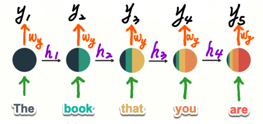
- RNN 也存在一定的限制，在處理較長的句子或序列時，RNN 容易出現「長期依賴問題」，即模型會逐漸「遺忘」先前的資訊，導致上下文理解不完整。這使得 RNN 難以處理長篇的文本或長時間的語音。
- 為了解決 RNN 的長期依賴問題，長短期記憶網路（Long Short-Term Memory, LSTM） 應運而生
- 語言是有順序關係的，每一個詞的意思通常會受到前後詞語的影響。因此，處理語言、語音這類有時序關係的資料時，我們需要一種能夠記住先前資訊的模型來協助理解整體上下文。
- 從文字生成到影像生成
- 由 Ian Goodfellow 及其團隊於 2014 年提出的生成對抗網路（Generative Adversarial Networks, ） 是生成式AI領域的另一個重要里程碑，生成對抗網路一問世便在影像生成領域引發了廣泛的關注，成為生成式AI的核心技術之一。
GAN

- thispersondoesnotexist
- 由 Ian Goodfellow 及其團隊於 2014 年提出的生成對抗網路（Generative Adversarial Networks, ） 是生成式AI領域的另一個重要里程碑，生成對抗網路一問世便在影像生成領域引發了廣泛的關注，成為生成式AI的核心技術之一。
- 從影像生成到影像理解
- 014年，Google開發了一個名為Show and Tell（如圖 1.2 5）的影像理解模型，這是一個能夠為照片生成簡單文字描述（Image Captioning）的系統， Show and Tell展示了人工智慧「看懂」一張照片的能力，
Show and Tell
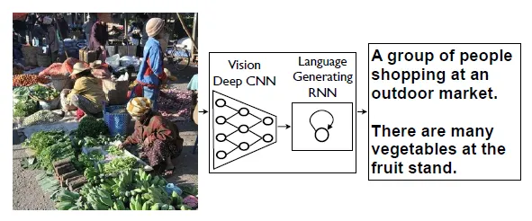
- 014年，Google開發了一個名為Show and Tell（如圖 1.2 5）的影像理解模型，這是一個能夠為照片生成簡單文字描述（Image Captioning）的系統， Show and Tell展示了人工智慧「看懂」一張照片的能力，
Transformer 架構的突破
Transformer 的自注意力機制具備了下列兩項優勢：
- 全局關聯：自注意力機制讓模型在處理句子中的每個詞時，可以同時參考其他所有詞語的資訊，這樣即使上文文章開頭的「賈伯斯」、「離開蘋果」與文末的「他」、「回到蘋果」之間距離較遠，自注意力機制仍能輕鬆找到這種關聯，從而理解「他」指的就是「賈伯斯」，也能對賈伯斯的整個行動脈絡有所掌握，知道他曾離開，後來又回到蘋果。如果使用RNN 或 LSTM，在處理到文末的「他再次回到蘋果」時，文章開頭的「賈伯斯」與「離開蘋果」可能已被模型遺忘。
- 平行處理：自注意力機制允許 Transformer 同時處理句子中的所有詞語，這比 RNN 和 LSTM 的逐句循序處理要快很多，每個詞都能同時接收來自其他詞的資訊，大幅提高了處理效率。
How a transformer models work:2
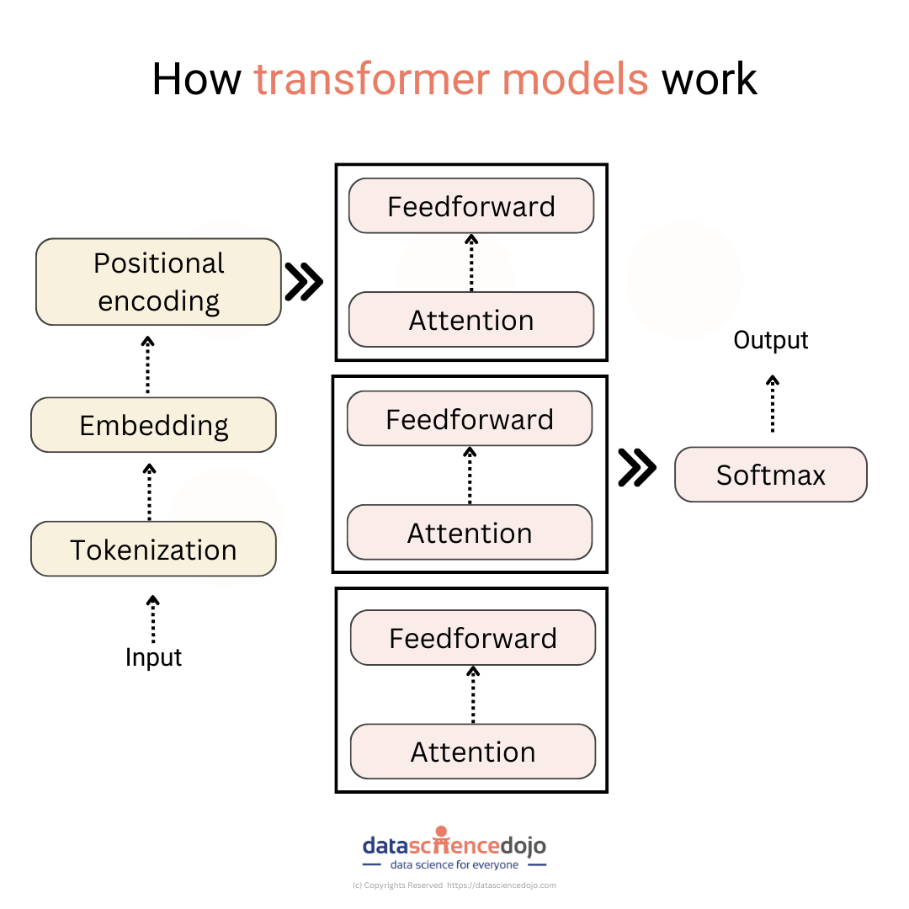
- 全局關聯：自注意力機制讓模型在處理句子中的每個詞時，可以同時參考其他所有詞語的資訊，這樣即使上文文章開頭的「賈伯斯」、「離開蘋果」與文末的「他」、「回到蘋果」之間距離較遠，自注意力機制仍能輕鬆找到這種關聯，從而理解「他」指的就是「賈伯斯」，也能對賈伯斯的整個行動脈絡有所掌握，知道他曾離開，後來又回到蘋果。如果使用RNN 或 LSTM，在處理到文末的「他再次回到蘋果」時，文章開頭的「賈伯斯」與「離開蘋果」可能已被模型遺忘。
- 大語言模型與多模態生成時代
- 2019年2月，OpenAI發布了第二代的語言模型產品GPT-2，該模型具有15億個參數
- 2020年推出具有1750億個參數的GPT-3 ，至此，生成式AI正式進入了大語言模型（Large Language Model, LLM）時代
- 2019年2月，OpenAI發布了第二代的語言模型產品GPT-2，該模型具有15億個參數
1.3. 生成式AI的類型與應用
1.3.1. 類型
- 文字生成
- 影像生成
- 程式生成
- GitHub Copilot
- Colab + Gemini
- GitHub Copilot
- 其他模態生成
1.3.2. 應用
- 教育: 自主學習、筆記、語言學習、教師備課、評量
- 媒體/內容生成
- 商業：貼文、廣告、客服
2. 生成式AI相關理論
2.1. AI 的本質：函數
- 人工智慧本質上就是在找出一個特定函數。
成績預測
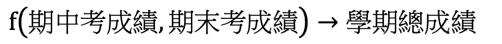
- 期末成績= 0.4 × 期中考成績 + 0.6 × 期末考成績
- 期末成績= 0.4 × 期中考成績 + 0.6 × 期末考成績
影像辨識
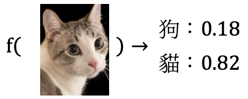
語音辨識
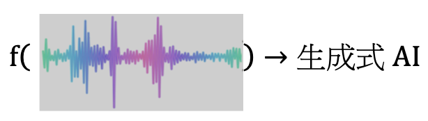
五子椣
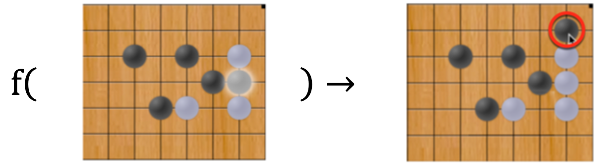
文字生成
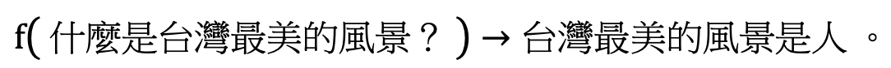
影像生成
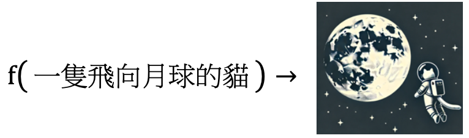
2.2. 模型訓練
2.2.1. 以函數參數尋找最佳模型
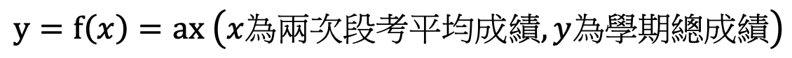
蒐集歷屆學長姐的成績資料（包括兩次段考平均成績與學期總成績），這些資料稱之為訓練資料（training data）
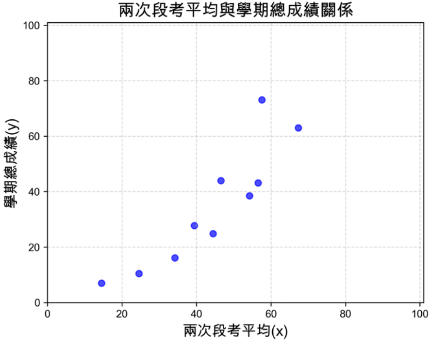
將訓練資料視覺化, 初步猜測二者可能存在線性關係
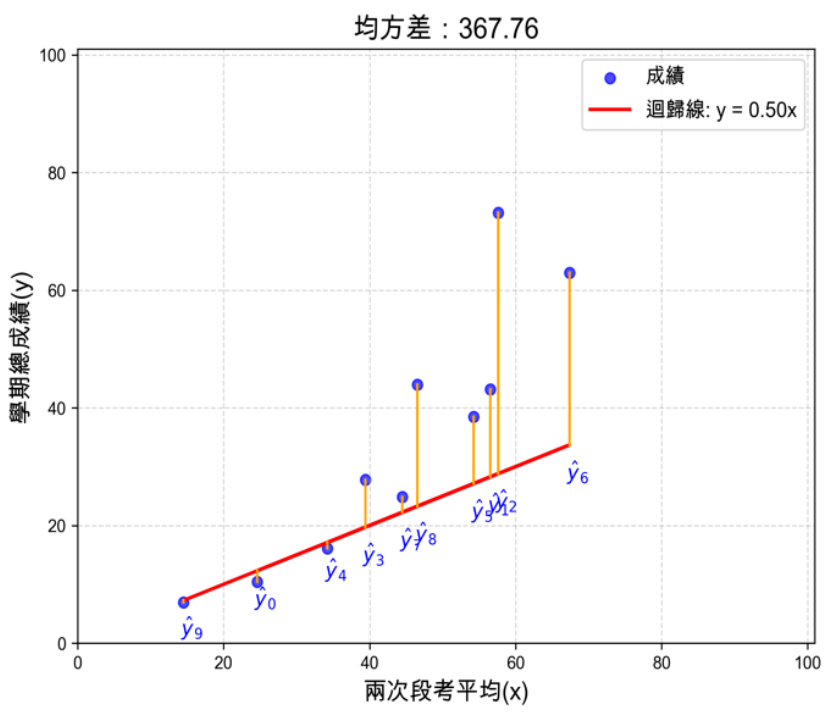
- 接下來的任務就是畫出一條能儘量接近圖上所有資料點的線，也就是找出最佳的參數 a（即這條迴歸線的斜率）
2.2.2. 利用梯度下降法與損失函數（如 MSE）來優化模型
2.2.3. 神經網路的概念與其參數調整方式
2.3. 探討活動 1
- Python 任務
- 比較不同類型的種損失函數、繪製損失函數曲線
- 設計一個函數來量化模型的準確性
- 比較不同類型的種損失函數、繪製損失函數曲線
2.4. 生成式 AI： 一種會接龍的函數
- 簡介文字生成的接龍機制
- Token 概念 與不同 GPT 版本的 token 處理方式
- 自迴歸模型 (AR) 與非自迴歸模型 (NAR) 比較
2.5. 探討活動 2
- 測試不同的中英文輸入，分析 Token 的劃分方式
- 比較 GPT-3 和 GPT-4 的 Token 分割方式
2.6. 文字、圖形與向量：先理解才能生成
- AI模型如何理解影像資料
- AI模型如何理解文字資料
2.7. 探討活動 3
- 以 Python 撰寫卷積核程式，分析影像特徵擷取
2.8. 探討活動 4
- 文字轉換向量的實作與探究
2.9. 2.5 編碼與解碼：邁向生成的一小步
- 簡介自動編碼器運作原理
- 簡介自動編碼器的應用
2.10. 探討活動 5
- 體驗 VAE（變分自動編碼器）的影像漸變
- 設計並測試不同數字間的影像漸變
3. 自然語言生成
3.1. 見樹也見林：從單詞到全句
- 探討 NLP 如何理解句子與文件
- 簡介BoW、TF-IDF、N-Gram
3.2. 探討活動 1
- 以實作體驗BoW、TF-IDF的運作並分析結果
3.3. RNN/LSTM：時間序列資料的解決方案
- 簡介RNN，LSTM、GRU運作原理
3.4. 探討活動 2
- 比較 RNN、LSTM、GRU 的結構與應用
3.5. 注意力機制與 Transformer
- 簡Seq2Seq 模型
- 簡介Transformer及自注意力機制
3.6. 探討活動 3
- 實作以 Transformer 進行文字翻譯
- 觀察並解釋程式生成之注意力矩陣
3.7. 從 LM 到 LLM
- 簡介LM與LLM
- 介紹幾種常見的LLM
3.8. 探討活動 4
- 搜尋並介紹一款 LLM
3.9. 語言模型的訓練與微調
- 介紹語言模型的建置、訓練與微調
3.10. 探討活動 5
- 訓練一個簡單的語言模型
4. 影像與多模態生成
4.1. 影像與多模態生成概述
- 簡介 AI 在影像與影片生成的發展
- 介紹不同類型的多模態生成
- 文字生成影像、文字生成影片（Text-to-Image / Text-to-Video）
- 影像生成文字、影片生成文字（Image-to-Text / Video-to-Text）
- 影像生成影像、影片生成影片（Image-to-Image / Video-to-Video）
- 文字生成影像、文字生成影片（Text-to-Image / Text-to-Video）
4.2. 探討活動 1
- 選擇兩種多模態生成技術
- 比較不同工具的生成品質與操作便利性
4.3. VAE：生成模型的開端
- 變分自動編碼器（VAE）的概念與原理
- 應用VAE進行風格轉換與圖片漸變
4.4. 探討活動 2
- 使用 VAE 進行圖片風格轉換
- 測試不同的 潛在向量（Latent Code） 設定，分析結果
4.5. GAN：在對抗中學習
- 介紹 生成對抗網路（GAN） 的概念
- GAN 在 圖片生成、風格轉換、Deepfake 等領域的應用
4.6. 探討活動 3
- 訓練一個簡單的 GAN 來生成手寫數字
- 體驗 GAN 風格轉換，將照片轉換為卡通風格
4.7. Diffusion Models：擴散模型的崛起
- 介紹擴散模型（Diffusion Models）的原理
- 介紹幾種代表性的擴散模型應用
4.8. 探討活動 4
- 嘗試不同的提示詞（Prompt），比較生成結果
- 利用Gradio 或 Streamlit實作一個簡單的文生圖介面
4.9. 從單模態到多模態生成
- 簡介多模態生成（Multimodal Generation）的概念
- 介紹 CLIP、Sora、ViT（Vision Transformer） 的應用
4.10. 探討活動 5
- 使用 CLIP 進行圖文匹配
- 嘗試以 Sora 生成短影片
- 討論多模態 AI 的應用與未來發展
5. 生成式 AI 的相關議題
5.1. 法律議題
- 探討生成式 AI 在法律層面的影響
- 探討生成式AI主要法律爭議
5.2. 探討活動 1
- 討論兩起生成式 AI 相關的判決案例
- 分析 AI 生成內容的法律地位與影響
5.3. 倫理議題
- 討論生成式 AI 可能引發的倫理問題：
5.4. 探討活動 2
- 測試不同 AI 聊天機器人的倫理邊界
- 討論如何設計更符合倫理規範的 AI
5.5. 教育議題
- 探討生成式 AI 對學校教育的影響
- 討論 AI 在學習輔助與評量中的角色
5.6. 探討活動 3
- 一組使用 AI 撰寫報告，另一組傳統方式撰寫
- 實驗比較「有/無以AI輔助學習」在學習內容完整性與學習體驗上的差異
5.7. 其他議題
- 環保議題：生成式 AI 的電力與水資源消耗
- 壟斷與反壟斷：科技巨頭如何主導 AI 發展
- 就業市場影響：AI 取代與創造的新職業
- 國防與安全風險：AI 在戰爭與資訊戰中的應用
5.8. 探討活動 4
- 計算、分析個人 AI 使用的電力消耗
- 討論 AI 節能技術與環保策略
5.9. 探討活動 5
- 列舉 AI 可能取代的職業、可能創造的新職業
- 制定 AI 時代的職業發展策略